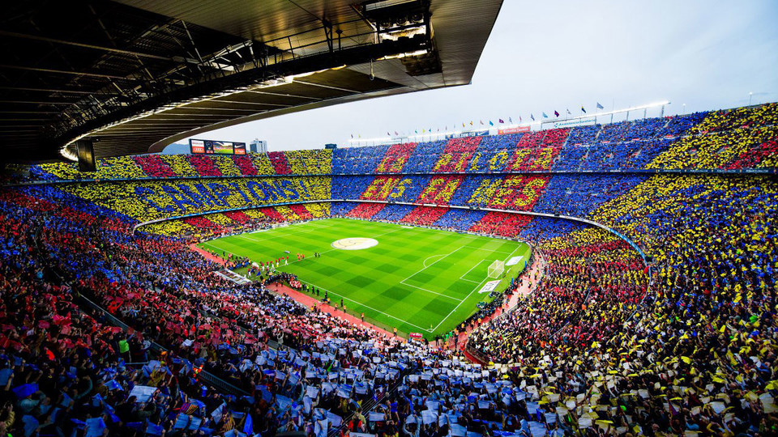
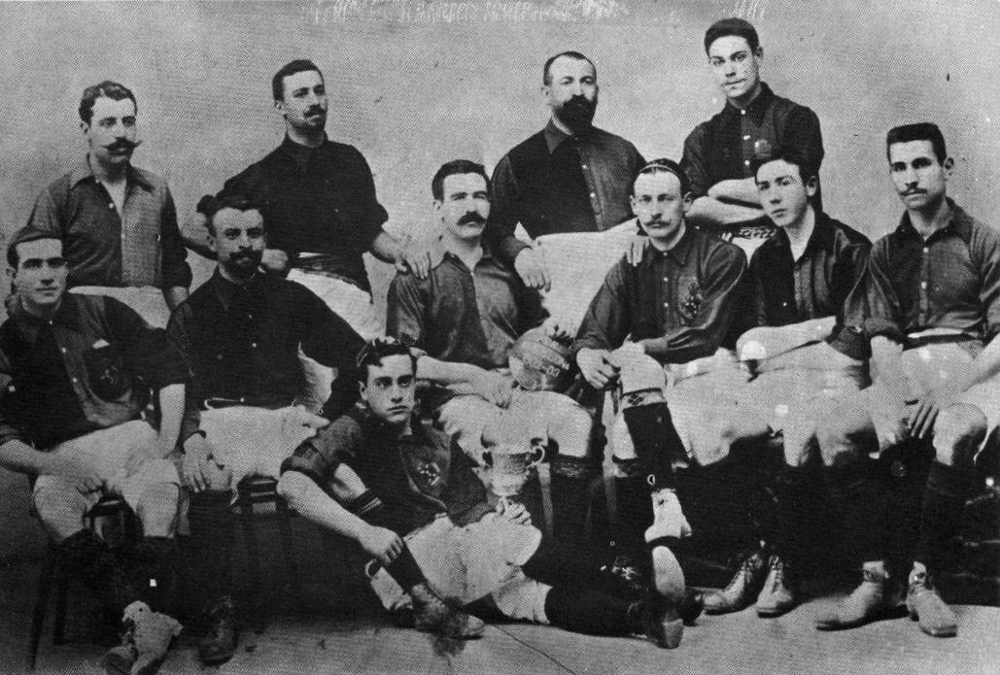
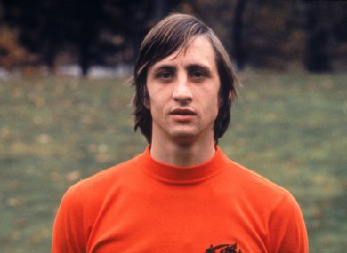
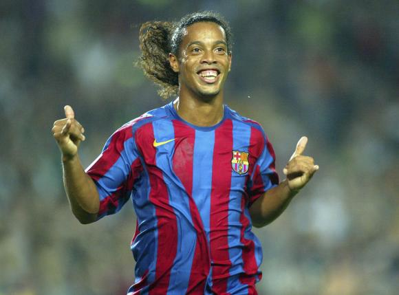
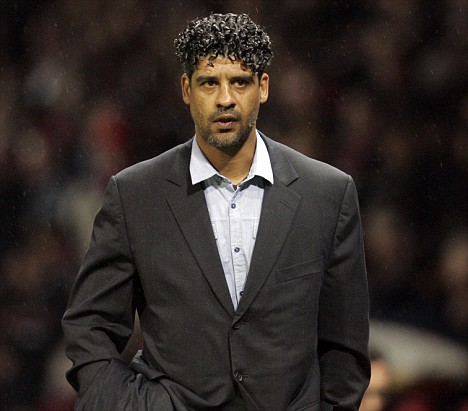

Fútbol Club Barcelona, pe scurt Barcelona sau Barça, este un club de fotbal din Barcelona, Spania, care evoluează în Primera División.
Fondat în 1899 de un grup de fotbaliști elvețieni, britanici și catalani conduși de Joan Gamper, clubul a devenit un simbol al culturii catalane și al naționalismului catalan, mottoul său fiind prin urmare „Barça este mai mult decât un club” (catalană: FC Barcelona - Més que un club). Imnul oficial al Barcelonei este „Cant del Barça”, scris de Jaume Picas și Josep Maria Espinàs. Spre deosebire de multe alte cluburi, suporterii dețin și conduc Barcelona. Este al doilea cel mai bogat club de fotbal în ceea ce privește veniturile, având o cifră de afaceri anuală de 450 milioane €. FC Barcelona are o îndelungată rivalitate cu Real Madrid, meciurile disputate între cele două echipe fiind cunoscute sub numele de „El Clásico”.

Stadionul Camp Nou
Scurtă Istorie
Echipa fanion a orașului Barcelona, Català FC, a fost înființată în apropierea sălii de sport Tolosa de către Jaume Vila, având scopul declarat de a promova sportul local. Acest club a refuzat integrarea tânărului entuziast al fotbalului Joan Gamper, datorită faptului că nu era catalan. Reacția lui Gamper la acest refuz a fost crearea clubului FC Barcelona pe 29 noiembrie 1899, împreună cu un grup de tineri englezi, un canadian și câțiva barcelonezi. Pe lângă secția de fotbal, în cadrul clubului și-au desfășurat activitatea și alte sporturi (baschet, handbal, hochei pe iarbă, rugby, baseball, patinaj artistic, volei, fotbal în sală, ciclism, hochei pe gheață).
La 22 octombrie 1899 Gamper a făcut o reclamă în Los Deports declarându-și dorința de a forma un club de fotbal. Din răspunsul pozitiv primit s-a stabilit o întâlnire la Gimanasio Sole pe 29 noiembrie. Unsprezece jucători au participat: Gualteri Wild, Lluís d'Ossó, Bartomeu Terradas, Otto Kunzle, Otto Maier, Enric Ducal, Pere Cabot, Carles Pujol, Josep Llobet, John Parsons și William Parsons. Astfel s-a născut Foot-Ball Club Barcelona.[5] Mai multe alte cluburi de fotbal spaniole, cele mai notabile fiind Real Madrid și Athletic Bilbao aveau, de asemenea, fondatori britanici și datorită acestui fapt și-au adoptat nume în stilul englezesc.
Legenda spune că Gamper a ales culorile legendare ale clubului, azulgrana, după FC Basel, fostul său club. Însă alte echipe elvețiene pentru care Gamper jucase, cea a cantonului său natal din Zurich și Școala Comercială a Croitorilor în Crosby, Merseyside au fost creditate și au pretins a fi sursa de inspirație.

FC Barcelona în 1903
În 1957, Camp Nou și-a deschis porțile pentru marele public. Este adecvat să se țină în vizor că proiectul a fost susținut personal de către însuși Generalul Franco, care a aprobat o extrem de generoasă apreciere a statului privind locația unde stadionul urma să fie construit, îngrijindu-se astfel de finanțarea acțiunii. Cu o capacitate de până la 90,000 de spectatori, Camp Nou este unul dintre cele mai mari stadioane din lume. Din păcate, la câțiva ani după inaugurare, titlurile s-au rărit, fiind în număr de doar trei în timpul anilor 1960. Dar chiar și atunci clubul nu s-a oprit din evoluție, câștigând putere economică și socială în fiecare an.
Spre deosebire de deceniul anilor 1950, când Real Madrid a fost capabil să împiedice în mod scandalos transferul starului argentinian Alfredo Di Stefano la FC Barcelona, legenda olandeză Johan Cruyff a semnat un contract cu acest club în 1973. Stilul său electric de joc, rapid și inteligent, nu ar fi putut fi mai bine apreciat de către fani. Până și suma record de £922,300 plătită de FC Barcelona pentru semnătura sa părea nimic după înfrângerea lui Real Madrid cu 5-0 în Santiago Bernabéu (stadion) propria lor arenă și câștigarea ligii. Până în anul următor clubul avea 70,000 membri, devenind astfel unul dintre cele mai puternice din lume.

Johan Cruyff

Ronaldinho

Frank Rijkaard
Odată cu venirea lui Joan Laporta,cea a superstarului Ronaldinho și a fostului internațional olandez Frank Rijkaard ca manager (care era, de fapt, a treia variantă a lui Laporta, după Ronald Koeman de la Ajax și Guus Hiddink de la PSV Eindhoven) printre altele, noul stil de administrare a readus succes la club. Datoriile masive moștenite s-au redus și doar o mică parte din jucătorii crescuți în echipa care nu a reușit să câștige un titlu important în cinci ani au rămas la echipă. În sezonul 2003/2004 Barcelona a avut o revenire de formă spectaculoasă, terminând pe locul doi, după ce fusese în prealabil la coada clasamentului o parte îndelungată a sezonului. Motivul pentru care Barcelona nu a reușit chiar câștigarea campionatului a fost pentru că revenirea s-a petrecut prea târziu. În sezonul 2004/2005, Barcelona a condus clasamentul din prima până în ultima etapă, adjudecându-și al șaptesprezecelea titlu de campioană a Spaniei la 14 mai 2005 și a șasea Supercupă a Spaniei la 20 august 2005. În ciuda ieșirii din cursa pentru Liga Campionilor în mâinile lui Chelsea, suporterii și jucătorii asemenea încep să creadă într-o a treia eră de aur. Pe 17 mai 2006, Barcelona a reușit să câștige finala Ligii Campionilor în fața echipei engleze Arsenal F.C. Sezonul 2007-08 s-a încheiat fără niciun titlu,Barça terminând pe locul trei în La Liga și a fost învinsă în semifinala Ligii Campionilor de Manchester United cu scorul de 1-0.
De atunci, Barcelona a fost in rivalitate crancena cu Real Madrid, impartindu-si adesea trofee si titluri. Meciurile "El Clásico" raman in prezent cele mai vizionate partide de pe glob, iar performantele ambelor echipe sunt si azi demne de aplauzele a sute de milioane de oameni.